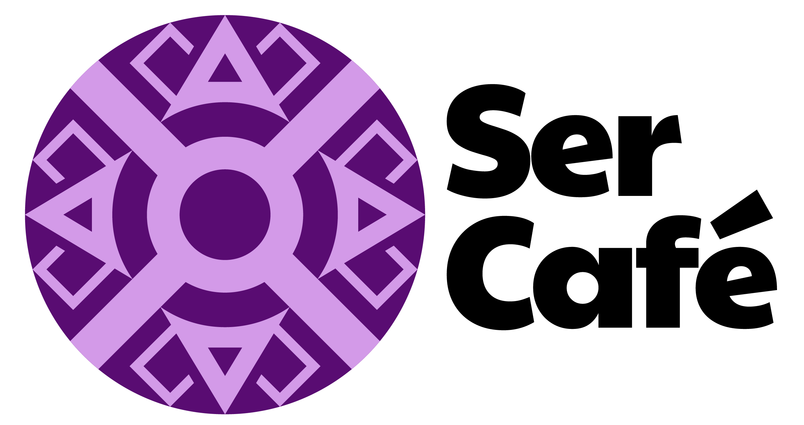
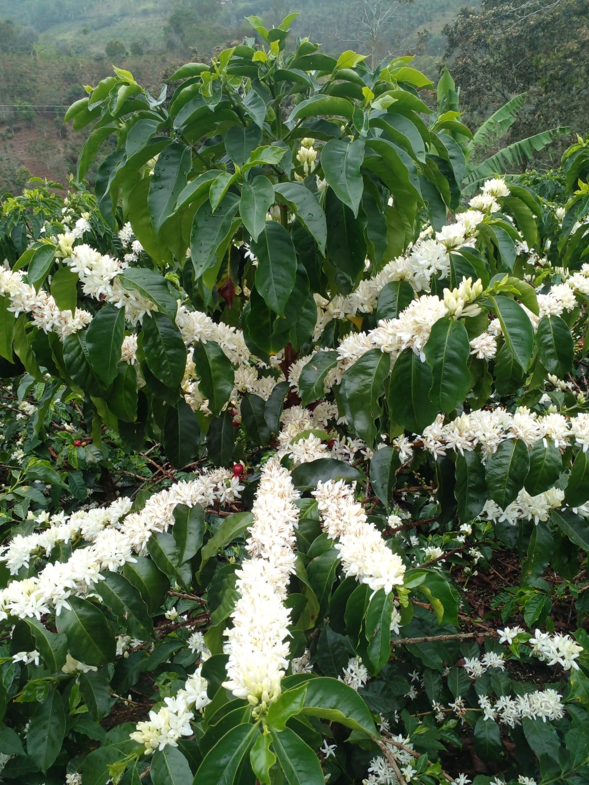
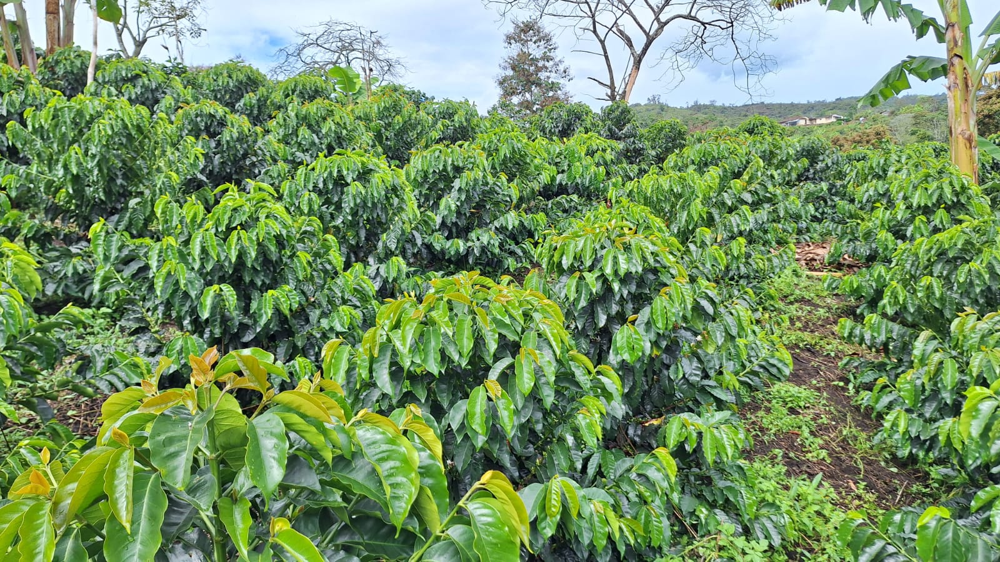
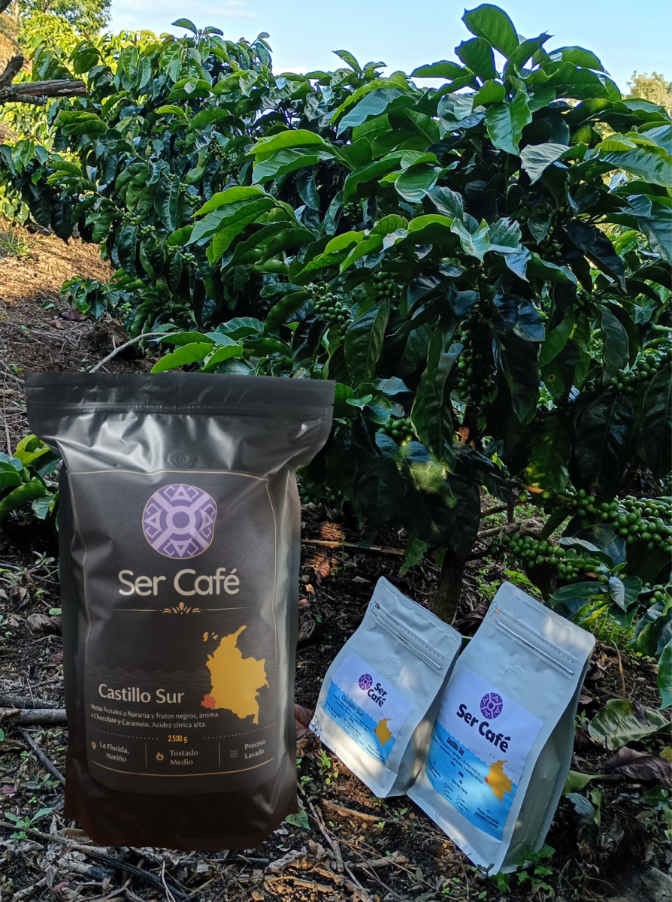

En el corazón de Nariño, en la Finca Lucitania, cultivamos con pasión nuestro café. El proceso de lavado y el secado al sol preservan la pureza de cada grano.
Un café con carácter, trazable desde la montaña hasta tu taza.
Cada detalle cuenta para ofrecerte una taza perfecta: notas de naranja y frutos negros, aromas a chocolate y caramelo, y una acidez cítrica que ilumina el paladar.
